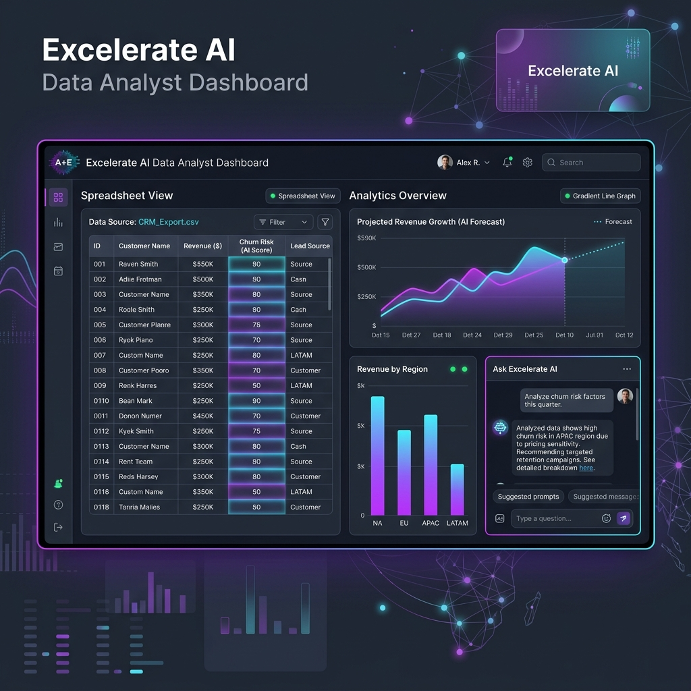
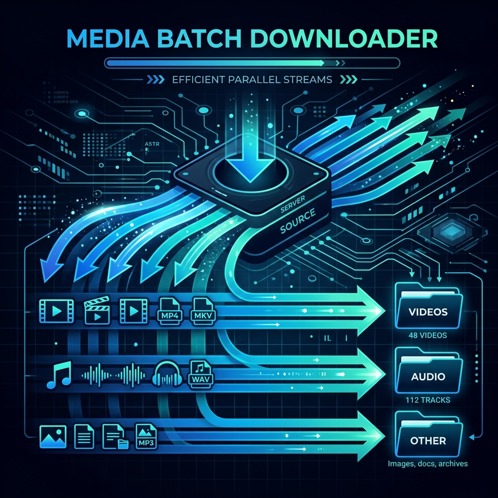
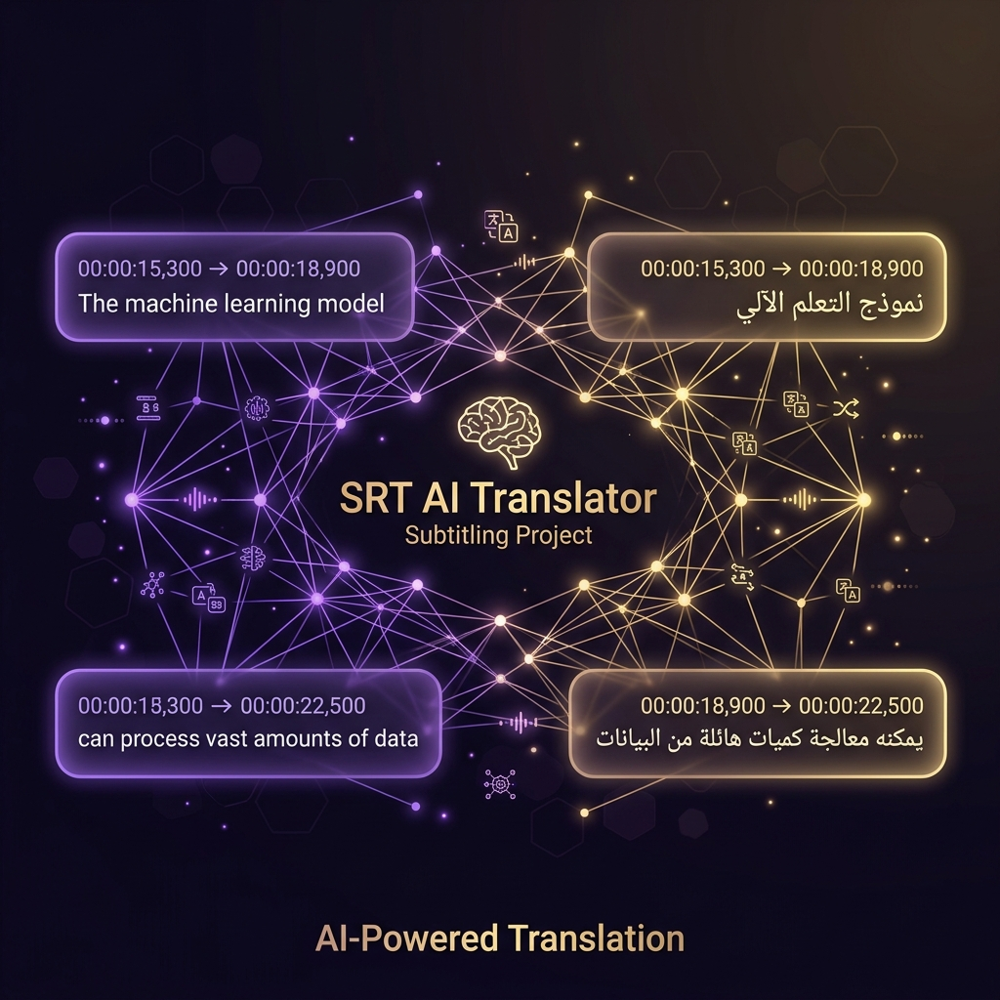
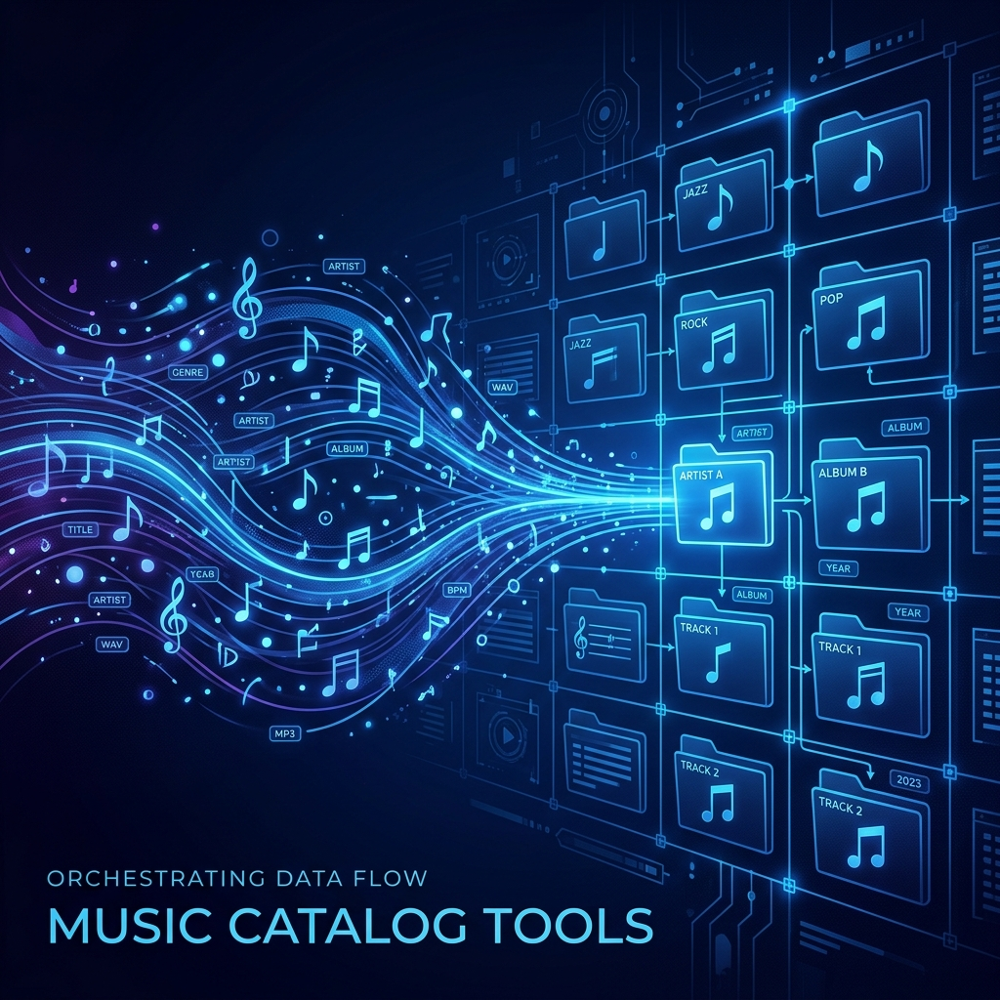

Specialized Tooling & Open Source
Production-grade music distribution engines, natural-language data utilities, and public open-source libraries.
DDEX Delivery Toolkit
End-to-end distribution engine converting raw catalog metadata into certified DDEX ERN 3.8.2 XML delivery packages for DSP ingestion (TikTok, Facebook, YouTube Music). Features Playwright Octolivery automation and automated FFmpeg transcoders.

Excelerate — AI Data Analyst
Natural-language spreadsheet manipulation platform. Upload any CSV or Excel workbook and execute complex analytical transformations using natural language. Built with a two-stage prompt refinement pipeline and preview sandbox.

Media Batch Downloader & Suite
Industrial parallel downloader for YouTube, Udio, Facebook, and Instagram Reels. Incorporates retry backoffs, multi-format audio conversion (MP3, FLAC, WAV), thumbnail extraction, and batch JSON manifests.

SRT AI Translator & Subtitle Studio
Automated video subtitle translation studio. Parses raw `.srt` files, batches timecode entries through LLM pipelines preserving exact timing constraints, and handles dialect-specific Arabic localization.

Music Catalog & Metadata Tools
Automated audio file tagging, ISRC verification, and audio fingerprinting toolkit. Validates lossless audio files against DSP ingestion specifications and generates standardized catalog manifests.

YouTube Asset & Metadata Tools
CLI suite and automation scripts for managing YouTube partner assets, bulk updating asset metadata, verifying ownership splits, and resolving claim disputes across partner channels.